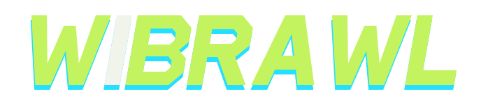
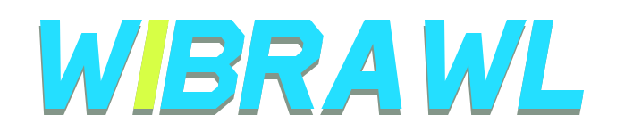
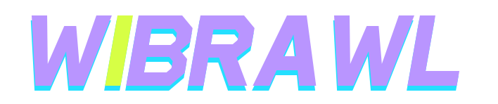

Gaming lime

Lime lettering, a cyan lower echo, and an off-white I.
Download SVGThe selected middle wordmark, with three alternative colour combinations.

Lime lettering, a cyan lower echo, and an off-white I.
Download SVG
Cyan lettering, a muted green-grey lower echo, and a neon yellow I.
Download SVG
Violet lettering, a cyan lower echo, and a neon yellow I.
Download SVG